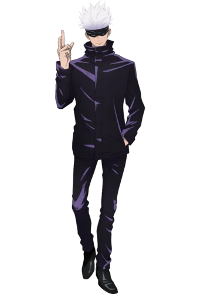

Satoru Gojo (五ご条じょう悟さとる, Gojō Satoru?) Adalah salah satu protagonis utama dari seri Jujutsu Kaisen. Dia adalah penyihir jujutsu kelas khusus dan diakui secara luas sebagai yang terkuat di dunia.
Satoru adalah individu yang kompleks. Dia biasanya terlihat acuh tak acuh dan suka bermain-main terhadap murid-muridnya, rekan dekat, dan teman-temannya. Namun, dia tidak simpatik dan kejam terhadap eksekutif penyihir, contohnya adalah rasa tidak hormatnya yang mencolok terhadap Kepala Sekolah Gakuganji, dan musuh-musuhnya.
Satoru sangat percaya diri dengan kemampuan dan reputasinya sebagai penyihir yang kuat, percaya dirinya tak terkalahkan. Pendapatnya tentang orang lain seringkali hanya sejauh penilaiannya tentang kekuatan mereka, dan dia cukup apatis terhadap siapa pun yang dia anggap lemah. Selain itu, sangat dipengaruhi oleh keinginannya sendiri akan kekuasaan, dia sangat arogan. Dia yakin bahwa dia adalah yang terkuat di dunia, yang secara teknis dia mengklaim, selama pertarungannya dengan Toji Fushiguro, bahwa "di seluruh Langit dan bumi, dia sendiri yang dihormati." Ini dapat dicontohkan lebih lanjut ketika dia ditugaskan untuk melindungi Riko Amanai, salah satu dari sedikit orang 'lemah' yang dengan tulus dia tunjukkan untuk menunjukkan kasih sayang. Namun, empati apa pun atas kematiannya segera ditiadakan oleh kesombongan dan kesombongannya yang besar setelah menyempurnakan teknik kutukan terbalik dalam pertempuran berikutnya melawan Toji Fushiguro.
Selama pertempuran sengit, Satoru terlihat sesekali jatuh ke dalam keadaan pertempuran yang hiruk pikuk, didorong oleh tekadnya untuk menang dan bukti tak terbantahkan bahwa dia sendirilah yang terkuat. Gaya bertarungnya ditandai dengan serangannya yang agresif dan mendominasi, sambil memamerkan teknik-tekniknya yang dikuasai kepada lawan-lawannya. Lebih jauh lagi, dalam suatu krisis, ia mampu menjadi berdarah dingin. Dia akan memprioritaskan penghancuran musuhnya daripada menyelamatkan orang yang tidak bersalah ketika dia percaya bahwa pengorbanan tidak dapat dihindari. Namun, ini hanya berlaku untuk orang yang dibunuh oleh lawannya; dia tidak akan menyakiti atau membunuh siapa pun yang tidak bersalah untuk menang.
Satoru Gojo
Jujutsu Kaisen
Biographical Information
Japanese
五条悟Characteristics
Ulang Tahun 7 Desember
Umur 28
Jenis Kelamin Laki Laki
Warna Mata Biru Muda
Tinggi 190 Cm
Warna Rambut Putih